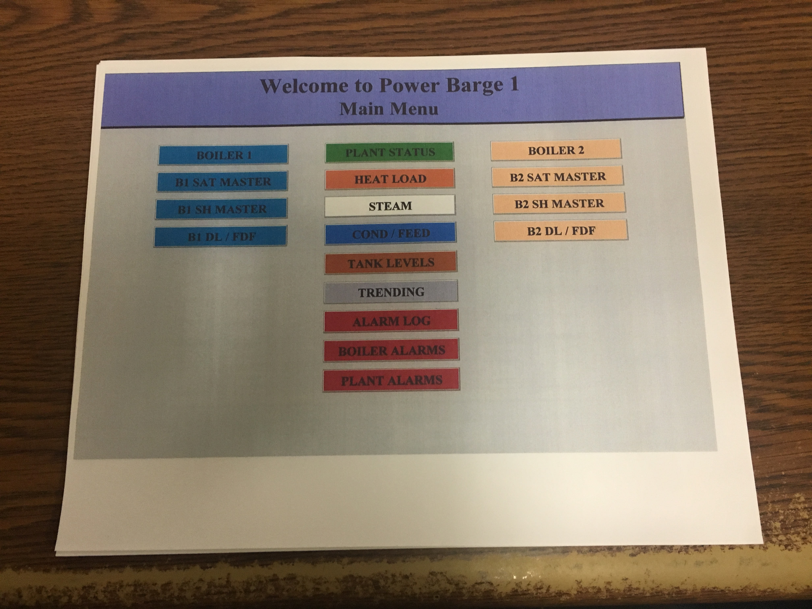
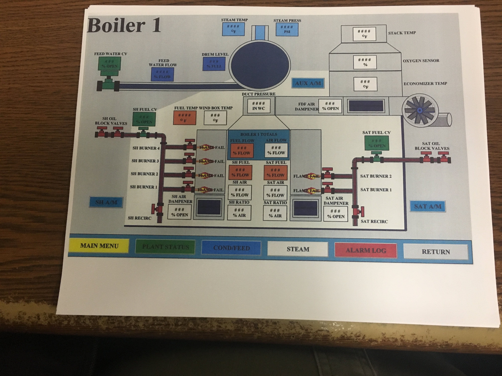
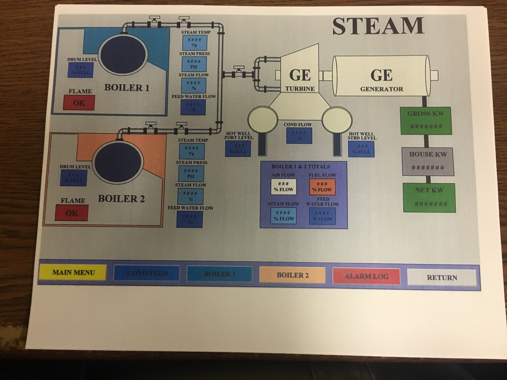
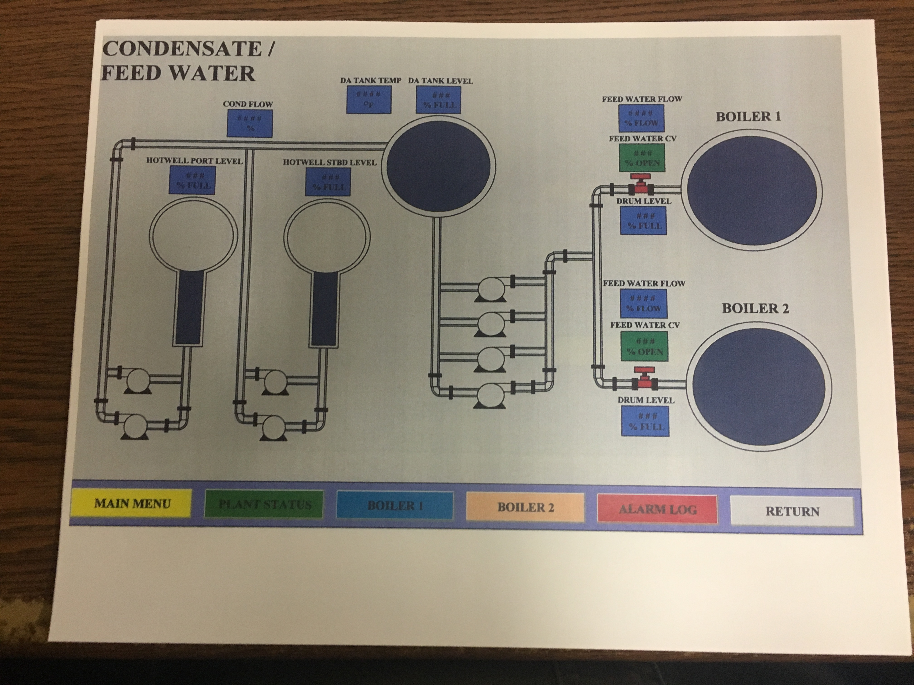
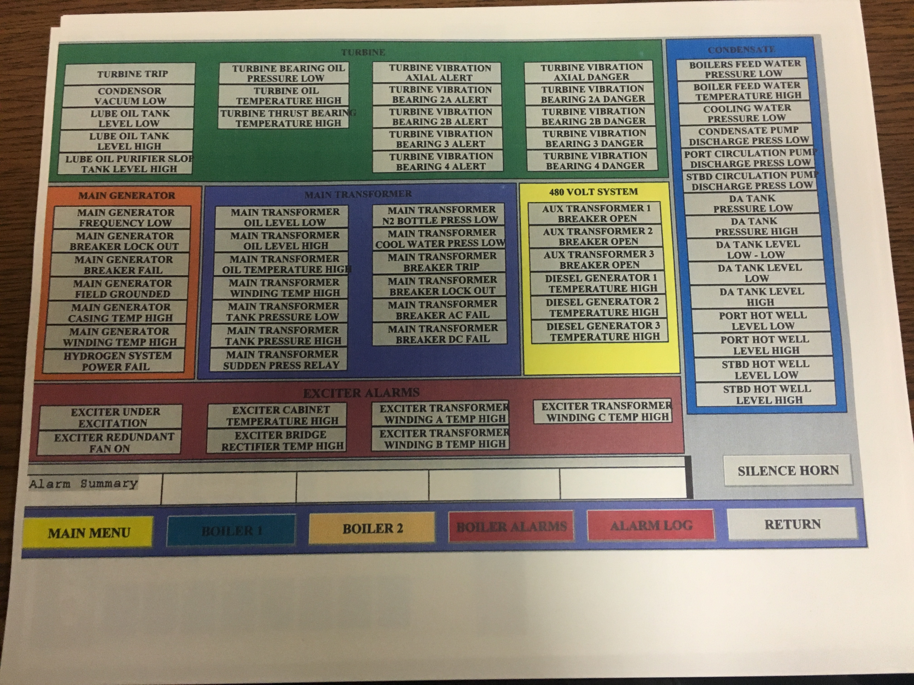

I have been in Automation and Controls most of my career.
I started out working for my father at 4 years old assembling circuit borads.
I then learned to read schematics and diagnose components, and even learned to design the circuit board art work.
Eventually, I moved into the world of designing and building Control Panels and I learned PLCs and HMIs.
I worked with my father until 2006 when traveling was taking too much of a toll on family life.
I am very thankful to all my father has taught me over the years, I gained a remarkable amount of valuable real world experience over the years thanks to him.
These are pictures of an HMI I had done with RSView32 SE back in 2002, technology has come a long way since then!





Last Updated 1/2/2019